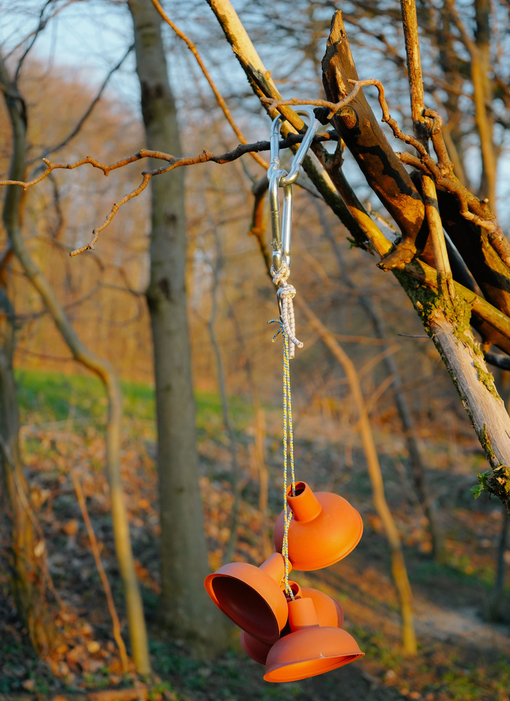

“Tom Sawyer”, which had its final show in July 2022 with the same opera director, Julia Riegel.
1 / 10
Tom Sawyer - Inszenierung
2 / 10
Tom Sawyer - Fotos
3 / 10
Tom Sawyer - Fotos
4 / 10
Tom Sawyer - Fotos
5 / 10
Tom Sawyer - Fotos
6 / 10
Tom Sawyer - Fotos
7 / 10
Tom Sawyer - Fotos
8 / 10
Tom Sawyer - Fotos
9 / 10
Tom Sawyer - Fotos
10 / 10
Tom Sawyer - Fotos
Work in progress. Drafts and moodboards for stage and
costume design for the opera „Macbeth“ by Verdi, 2022-
2023. Collages with collected foreign image material.
1 / 15
Macbeth. A play - Draft & Moodboard
2 / 15
Macbeth. A play - Draft & Moodboard
3 / 15
Macbeth. A play - Draft & Moodboard
4 / 15
Macbeth. A play - Draft & Moodboard
5 / 15
Macbeth. A play - Draft & Moodboard
6 / 15
Macbeth. A play - Draft & Moodboard
7 / 15
Macbeth. A play - Draft & Moodboard
8 / 15
Macbeth. A play - Draft & Moodboard
9 / 15
Macbeth. A play - Draft & Moodboard
10 / 15
Macbeth. A play - Draft & Moodboard
11 / 15
Macbeth. A play - Draft
12 / 15
Macbeth. A play - Moodboard
13 / 15
Macbeth. A play - Draft
14 / 15
Macbeth. A play - Moodboard
15 / 15
Macbeth. A play -
Group exhibition at the architecture house in
Salzburg in June 2022 in cooperation with our
department of scenography at Mozarteum as part of
the Austrian Architecture Days on the subject of
education and architecture of the future:
“Living-Learning-Space“.
Bildungs(t)räume reflected the interaction between
learning and spatial aspects of the current
educational discourse.
1 / 16
Lernplane + Lernrucksack - Operation manual.
2 / 16
Pictures: Pietro Bulfoni
3 / 16
Lernplane + Lernrucksack - Pictures: Pietro Bulfoni
4 / 16
Lernplane + Lernrucksack - Pictures: Pietro Bulfoni
5 / 16
Lernplane + Lernrucksack - Pictures: Pietro Bulfoni
6 / 16
Lernplane + Lernrucksack - Pictures: Pietro Bulfoni
7 / 16
Lernplane + Lernrucksack - Pictures: Pietro Bulfoni
8 / 16
Lernplane + Lernrucksack - Pictures: Pietro Bulfoni
9 / 16
Lernplane + Lernrucksack - Pictures: Pietro Bulfoni
10 / 16

Lernplane + Lernrucksack - Pictures: Pietro Bulfoni
11 / 16
Lernplane + Lernrucksack - Pictures: Pietro Bulfoni
12 / 16
Lernplane + Lernrucksack - Pictures: Pietro Bulfoni
13 / 16
Lernplane + Lernrucksack - Pictures: Pietro Bulfoni
14 / 16
Lernplane + Lernrucksack - Pictures: Pietro Bulfoni
15 / 16
Lernplane + Lernrucksack - Pictures: Pietro Bulfoni
16 / 16
Lernplane + Lernrucksack - Pictures: Pietro Bulfoni
„Kasimir und Karoline“
by Ödön von Horváth (director: Marion Weber) with a final show in Salzburg in January 2022.
1 / 9
Kasimir & Karoline - designed the costumes and stage
2 / 9
Kasimir & Karoline - designed the costumes and stage
3 / 9
Kasimir & Karoline - designed the costumes and stage
4 / 9
Kasimir & Karoline - designed the costumes and stage
5 / 9
Kasimir & Karoline - designed the costumes and stage
6 / 9
Kasimir & Karoline - designed the costumes and stage
7 / 9
Kasimir & Karoline - designed the costumes and stage
8 / 9
Kasimir & Karoline - designed the costumes and stage
9 / 9
Kasimir & Karoline - designed the costumes and stage
Opera project „Dido and Aeneas“ by Henry Purcell (director : Rosamund Gilmore),
which will be shown in Salzburg and Siena, Italy in July/August 2023.